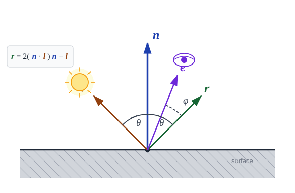
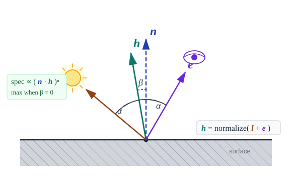

Page 10: Specular Shading
Specular shading considers the shiny, or mirror-like, aspects of surfaces.
Specular shading models the shiny, mirror-like character of surfaces. Think of a billiard ball, a wet rock, or a polished floor — these objects show a bright highlight that jumps around as you move, even if the light stays fixed. That behavior is the signature of specular reflection, and it contrasts directly with diffuse shading, where eye position never matters.
The “Graphics in 5 Minutes” video is very good at getting the concepts across. It also explains the transformation of a mirror reflection.
The Basic Idea
If a surface were a perfect mirror, incoming rays of light would bounce such that the angle of reflection is equal to the angle of incidence. The only way to see this reflected light would be to position the eye along the reflected direction. Therefore, the position of the eye matters.
The Phong model for specular reflection observes that we see the most reflected light when the direction to the eye is the same as the reflection direction. Therefore, the method works by computing the reflection direction and measuring the difference to the eye direction.
The reflection direction is high school physics: angle of incidence equals angle of reflection.
Vectors: N, L, E, and the Reflection R
We already defined the surface normal n and the light direction l (the unit vector from the surface point toward the light). For specular shading we need one more vector:
- e — the unit vector from the surface point toward the eye (viewer)
Together, n, l, and e describe the geometry of one shading computation.
For a perfect mirror, light arriving along l bounces off as the reflection of l about the surface normal n. That reflected direction is r, and it is given by:
The formula makes geometric sense: it takes the component of l along n, doubles it, and subtracts l back out — the result is the mirror image of l flipped across the surface normal. The resulting r makes the same angle θ with n as l does, which is exactly what “angle of incidence equals angle of reflection” says.
{kind=link}

The four key vectors at a surface point. The light direction l and its reflection r make equal angles θ with the normal n. The eye direction e is offset from r by angle φ. In a perfect mirror you only see the light when e exactly aligns with r; real shiny surfaces let some light through when φ is small.
Brightness from the E–R Alignment
A perfect mirror would only send light to the eye when e and r are exactly aligned — a vanishingly rare coincidence. Real shiny objects are not perfectly smooth: their microscopic bumps scatter the reflection over a small cone around r. The closer e is to r, the brighter the surface point appears to the viewer.
The natural measure of alignment is the dot product — specifically, the cosine of the angle φ between e and r:
When e and r point in exactly the same direction (φ = 0°), the dot product is 1 and the surface is at peak specular brightness. As φ grows, the dot product decreases toward 0 and the surface dims. For φ > 90° the point is facing away from the viewer and we clamp to zero.
The Specular Exponent
The dot product falls off very slowly. Using the raw dot product gives a very broad, gradual highlight — more like dull plastic than polished metal. To control how tight and sharp the highlight is, we raise the dot product to a power , called the specular exponent (or shininess):
Here is the specular material color, which may be different from the diffuse color of the material. We will discuss the colors later. As a preview, many shiny surfaces have a white or near-white specular reflection because they reflect the light’s color rather than their own.
The exponent does one thing: it narrows the highlight. A small exponent ( or so) gives a broad, soft glow, like a rough or waxy surface. A large exponent ( or more) makes the highlight tight and intense, like polished metal or glass. You can experiment with it in this demo:
The reason is that raising a number between 0 and 1 to a higher power drives it toward 0 faster. Only values of very close to 1 — meaning e nearly aligned with r — survive to meaningful brightness when is large. The bright spot shrinks accordingly.
In the demo, the “non-highlight” parts of the object are (dark) green. This was created by adding a little bit of diffuse and ambient shading. You can switch to “specular only mode” to see what the specular parts look like by themselves.
The Blinn-Phong Approximation
The formula above — computing r and then dotting with e — is the original Phong specular model. There is a popular variant, due to Jim Blinn, that swaps out r for a different vector and produces very similar results with some practical advantages.
The key observation is this: when the surface is at its specular peak, the eye direction e and the light direction l are arranged so that the surface normal n points exactly halfway between them. We can exploit this by defining the half vector h — the unit vector that bisects the angle between l and e:
{kind=link}

The half vector h bisects the angle between l and e. When h aligns with n, the surface normal points exactly midway between the light and the viewer — the condition for a perfect specular reflection.
The Blinn-Phong specular term then replaces with :
The two models are not identical — the angle between n and h is roughly half the angle between e and r, so the highlight shape differs slightly — but for most surfaces they look similar. One practical consequence: to get the same apparent width of highlight, the Blinn-Phong exponent should be about four times larger than the Phong exponent.
Blinn-Phong has two practical advantages over classic Phong. First, h is cheaper to compute than r — a sum and a normalization versus the full reflection formula. This mattered a great deal when Blinn introduced it in 1977 and hardware was doing the arithmetic; it is less critical today. Second, Blinn-Phong avoids a subtle artifact: when the viewing angle is very grazing, the classic Phong model can produce an abrupt cut-off in the highlight because can go negative even when the surface is still facing the light. Blinn-Phong handles grazing angles more smoothly.
Three.js uses Blinn-Phong in its MeshPhongMaterial, so the specular
exponent you set there follows the Blinn-Phong convention.
On the next page we will explore how specular, diffuse, and ambient lighting are combined in the Phong model. By using varying combinations of the parameters, we can achieve a variety of effects.
Next: Page 11 - The Phong Lighting Model